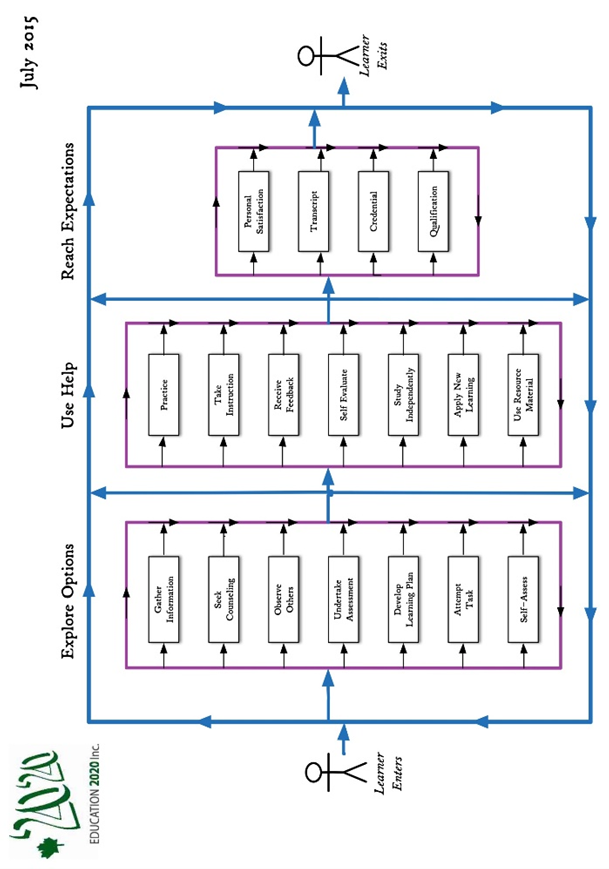
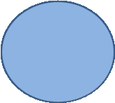
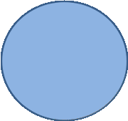
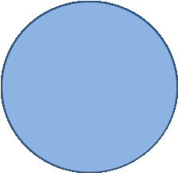
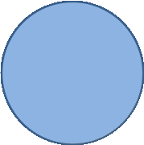
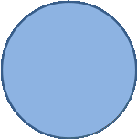

Education 20/20 Inc. is an independent, broad based, national, not-for-profit education organization, located in Charlottetown, PEI and is governed by a volunteer Board of Directors.
Vision: A quality education for every Canadian.
Mission: To support and strengthen a culture of learning for all Canadians.
Mandate: To contribute to the education of our citizens by providing information, encouragement and support for a quality education for all citizens.
Activities:
Education Award,
Monthly electronic newsletter. Website, Occasional papers,
Research, consultation. workshops
Directors:
Bill Whelan, President
, Vice President
Tom White-Hassler
Katherine McQuaid
Donald DesRoches
Amber Jadis
Tess Miller
Kate Scotland
Ross Reid
Don Glendenning
Pub/Bro/Frame/14
DRAFT

AN
EDUCATION
PRIMER
BY
DON GLENDENNING
101 Kent St., PO Box 624/rue Kent, BP 624
Charlottetown, PEI C1A 1M0 Canada
Tel: 902-892-2060
THIS BOOKLET
These notes were drawn together by Don Glendenning, a long-time educator and the Founding President of Holland College in Charlottetown, PEI.
Notes are based on a belief that there is a gap in current and independent information about public education, especially between those who provide educational services and those who use them. It is alsothe writer’s view that the meaning of education has narrowed in the past 50 years and, all too often, going to school is confused with getting an education. (World Bank: Education Crisis, 2019). Education authorities are encouraged to review their documents to ensure that their message is clear.
This booklet is intended as a quick reference for people new to education – parents ,students. trustees, employers, advisory committee members, elected representative, teachers- in- training and the public at large.
OUR THANKS:
Art work - Louise Carota
Editor – Sara Underwood
Content - Don Glendenning
Layout and design – Louise Carota
Printing- KKP Charlottetown
Friends and colleagues for encouragement
NOTE:
THIS BOOKLET IS IN POINT FORM AND LEAVES SPACE FOR READERS TO MAKE OWN NOTES
WORTH A VISIT
The following sites would be on the writer’s visit list:
Differentiated Staffing- Bishop Carrol High School, Calgary
Blended learning - Sail Academy, BC
Full-Service schools, Toronto School Board
individually designed schedules - Jason Lee Middle School, Tacoma, Washington
Democratic school management - Hanover, New Hampshire –
Principals’ Schools Project - Chicago Principals’ Research
Gradeless- individual profiles - New Brunswick
Proficiency based education, Melrose. Mass. USA
DEFINITIONS
Learner – a person who is in the process of changing the way he/she thinks, feels or acts
Learning - any experience that has a formative effect the way a person thinks, feels or acts
Quality education: “one that provides all learners with capabilities they require to become economically productive, develop sustainable livelihoods, contribute to peaceful and democratic societies and enhance individual well-being”- New Zealand Education Authority
Student- a person who is enrolled in a school or training institution.
Education - a person’s education is the state that allows a person to adequately cope with all demands of daily life. - Anon
Education system – services brought together by a community to encourage and support the education of its citizens.
LEARNERS AND LEARNING
A learner is a person who is trying to bring about change in his/her life - trying to change an attitude, gain new knowledge or add to skills. But learners are neither empty jars nor blank slates; each learner carries three pieces of luggage to every new learning situation:
Certain physical, mental and emotional conditions with which a learner is born.
Prior learning resulting from formal study, home circumstances, travel, state of health, personal interests, culture in which they operate and learning style
Aspirations and imagined future including where one will live, the work one will do and the lifestyle one will have, the nature of the family, quality of life, etc.
One’s future may require a different mix of attitudes, skills and knowledge than the ones we now have; the process of developing the new mix is called learning; the discernable change that occurs in us as a result of learning is education, and people who help us learn are usually called parents, or if paid, will likely be called teachers
Most of us need help in at least some of our new learning experiences; students tell us that they sometimes need:
Information: recent, independent, reliable, timely
Presentation: demonstrations, discussion and debate
Feedback: effective, valid, transparent, relevant
Counselling: planning, coaching,
Opportunity: access, time, funding, transportation
Products and technologies: textbooks, references, self-instructional material and assistive technologies
STUDENT ASSESSMENT
Robert Paul Wolff (Wolff: A discourse on Grading, 1969) identifies
three purposes for assessing students:
Criticism or analysis is for the purpose of designing additional strategies to help a learner learn. Criticism prepares a teacher to provide meaningful feedback and is part of the ongoing give and take of the learning process.
Evaluation is designed to establish a person’s level in a subject or field and should be criterion referenced
Ranking intended to show how a person stacks up against others; ranking results in students being winners or losers. Ranking results from competitions; students should be encouraged to participate and teachers and students can use the results but teachers should play no part in the ranking process.
LEVELS OF LEARNING-
The Revised Bloom’s Taxonomy recognizes six levels of learning:
Creating: Builds a structure or pattern from diverse elements. Put parts together to form a whole, with emphasis on creating a new meaning or structure
Evaluating: Make judgments about the value of ideas or materials
Analyzing: Separates material or concepts into component parts so that its organizational structure may be. understood. Distinguishes between facts and inferences.
Applying: Use a concept in a new situation or unprompted use of an abstraction. Applies what was learned in the classroom into novel situations in the work place.
Understanding: Comprehending the meaning, translation, interpolation, and interpretation of instructions and problems. State a problem in one's own words
Remembering: Recalling previous learned information
LEARNING PATH
The learning path below was developed in consultation with a panel of p0osttsecondary students who talked about their learning experience.

EDUCATIONAL BELIEFS
One gains an education through learning; education is the result of learning experiencse that had a formative effect on the way a person thinks, feels or acts. Below are a number of beliefs that shape one’s views of education:
All people can learn but some may need more time and assistance than others.
Learning is an individual matter but may occur in a group setting.
The most important part of one’s education is the part that occurs in the first six years of life.
The purpose of education is to help a person gain attitudes, skills and knowledge that will serve them well for the remainder of their life’s journey.
The responsibility for one’s education rests with one’s parents and/or one’s self.
Our future as a community depends, in a large measure, on the nature and level of education of our citizens.
Government’s role in education is (1) to encourage education among its citizens, (2) to ensure equity in its support and (3) to ensure the existence of skilled workers for the future of the community it serves.
An education system should be designed to deliver educational services needed by its citizens if, as and when needed.
DYNAMIC RATING SCALE
Outcome -based curriculum demands criterion referenced assessment; one such rating scale appears below.

BENCHMARK
A level of performance which is widely recognized by practitioners and the public at large and serves as a reference against which others are judged
QUALITY EDUCATION
UNICEF, The International Working Group on Education, Florence, Italy, 2000 tells us that A quality education system is one where:
learners are healthy
Environments are safe and respectful
Content is relevant
Outcomes are linked to personal and community objectives
Support is focused on learners and learning.
Information and advice is timely and independent
Teachers are professional, autonomous and accountable
OECD, PISA in Focus, OECD, 2011 studied PISA results in 13 countries and concluded that “in countries where schools have greater autonomy” over what is taught and how students are assessed, students tend to perform better”.
MEI, (2015) an Educational Think Tank in Quebec concluded that “accountability and autonomy” jointly applied, are key factors in school achievement”. He goes on to say that “changes to accountability and autonomy would cost government nothing, would entail better academic results and allow education to better adapt to the diversity of student needs and aptitudes”
WORLD BANK-Education Crisis. 2019 Successful education reforms require good policy design, strong political commitment and effective implementation capacity.
ON THE EDUCATION HORIZON
Education advisors
Learning Managers
Competencies
Self-rating
Learner profiles
Autonomy and accountability of professionals
School self-evaluation
Differentiated staffing
Performance based rating
Program advisory committees
Life coaches
LIFE ROLES
The road of life is a metaphor for the experiences one encounters between birth and death; the Oregon Department of Education suggests that each person fills a number of roles, that of an:
Individual,
Family member,
Citizen,
Learner,
Producer and
Consumer
ESSENTIAL SKILLS
While readers could make their own lists of essential skills, such lists usually include:
Reading
Document use
Numeracy
Writing
Oral Communication
Community awareness
Self-management
Interpersonal relations
Information technology
Independent learning
A CALL FOR ACTION
In 2015, Education 2020 Inc. published a Call for Action; below is a slightly modified version of that call::
Develop a “clear and compelling” vision of education for all Islanders
Develop a learner centered learning model
Create a learning culture
Delegate instructional roles to teachers and schools.
Establish a separate qualification
Make professionals directly accountable to clients for services rendered
Encourage and support innovation
TEACHING FUNCTIONS
The items the items below were taken from the writer’s files:
Design learning programs
Inform and counsel
Create and maintain learning environment
Evaluate learning resources
Assist in and support self-learning
Communicate in learning environment
Interact with community
Manage learning
Develop and evaluate instructional resources,
Develop personal competencies
Perform administrative duties
Diagnose learning needs
POSSIBLE VISITS
The following sites would be on the writer’s visit list:
Differentiated staffing – Bishop Carrol High School, Calgary
Blended learning - Sail Academy, BC
Full-Service schools, Toronto, School Board
individually designed schedules - Jason Lee Middle School, Tacoma, Washington
Democratic school management - Hanover, New Hampshire
Principals’ Project, Chicago Principals Research
Gradeless schools -- individual profiles - New Brunswick
Proficiency based education, Melrose. Mass. USA
GOVERNANCE & LEADERSHIP
Leadership
Planning
Liaison
Support
Research
Advocacy
Quality control
?
INSTRUCTION
Teaching/learning model
Demonstration
Practice
D iagnosis
Instructional materials
Liaison
Coaching
Record keeping
Guided practice
?
QUALITY
ASSURANCE
Credential
Qualification
Proficiency
Level
?
TYPICAL
EDUCATION SERVICES
Education System – services put in place by a community to encourage and support the education of its citizenns

INFO & COUNSELLING:
Information
Counselling

HUMAN RESOURCES
Teachers
Teacher advisors
Teaching assistants
Specialists
Guidance counsellors
Life coaches
?

LEARNING PRODUCTS
Texts and references
Self-instructional materials
Assistive technologies
Internet
Software
MOOCs
Technology
?

FUNDING
Capital
Operating
Transportation
?